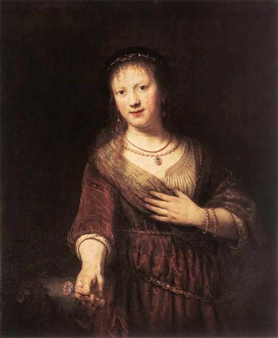

The Sad and Tragic Life of Rembrandt
Misery and greatness often go hand-in-hand
Saskia van Uylenburgh

Saskia van Uylenburgh (August 2, 1612 – June 14, 1642) was the wife of painter Rembrandt van Rijn. During the course of her life she was the model for a number of his paintings, drawings and etchings. She was the daughter of a Frisian mayor and the niece of Rembrandt’s art dealer.
Saskia and Rembrandt were engaged in 1633, and on June 10th, 1634 Rembrandt asked permission to marry her in Sint Annaparochie. He showed his mother's written consent to the schepen. On July 2nd the couple married. The preacher was Saskia's cousin, but evidently none of Rembrandt's family attended the marriage. That Saskia fell in love with an artist who was socially no match for the daughter of a patrician and that she pressed for a speedy betrothal against all conventions reveals that she was a strong and independent character. In 1635 the couple moved to one of the posh streets in Amsterdam, the Nieuwe Doelenstraat, with prominent neighbors and a view of the river Amstel.
Rembrandt achieved financial success through his artwork, and decided in 1639 to buy a house in the Jodenbreestraat, next to the place where he worked. A year before, Saskia's Friesian relatives had complained that Saskia was wasting her inheritance on the purchase. Rembrandt asked his brother-in-law Ulricus van Uylenburgh, who was also a lawyer, for help, and he confirmed that Rembrandt was indeed successful and therefore able to pay for the house.
Three of their children died shortly after birth and were buried in the nearby Zuiderkerk. The sole surviving child was Titus, who was named after his mother's sister Titia (Tietje) van Uylenburgh. Saskia died the year after he was born, aged 29, most likely from tuberculosis. She was buried in the Oude Kerk. For the next ten years Rembrandt focused primarily on his drawings and etchings.
Saskia’s will allowed Rembrandt to use their son's inheritance as long as he never remarried. If Titus died without issue, Rembrandt would be the heir of their property. Rembrandt hired Geertje Dircx as a wetnurse and in 1649 she expressed her expectation that he would marry her. Her plans went awry when, sometime during the following year, Rembrandt had her shipped off to the poor house. Hendrickje Stoffels became his new housekeeper and mistress. In 1662 Rembrandt, having been in severe financial trouble for several years, was forced to sell Saskia's grave.